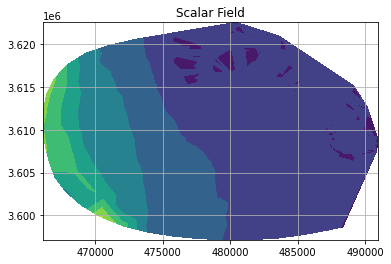

UGrid variable basics#
This is the basic introduction for using the ugridpy library.
ugridpy can be used for reading variable information from UGrid files.
At the very beginning, the necessary libraries have to be imported.
from ugrid import UGrid, UGridMesh1D
from ugrid.version import __version__
__version__
'0.9.0'
Other imports
import numpy as np
Reading topology’s attributes names and values#
with UGrid("./data_examples/OneMesh2D.nc", "r") as ug:
# 1. Get the mesh2d name. This is also the name of a variable
variable_name = ug.mesh2d_get(0).name
# 2. Get the mesh2D attribute names
attribute_names = ug.variable_get_attributes_names(variable_name)
# 3. Get the mesh2D attribute values
attribute_values = ug.variable_get_attributes_values(variable_name)
Create a dictionary of topology attributes names and values. This dictionary can be used for reading the file content with other libraries (xarray)#
variable_attributes = {name:value for (name,value) in zip(attribute_names,attribute_values) }
print(variable_attributes)
{'cf_role': 'mesh_topology', 'edge_coordinates': 'mesh2d_edge_x mesh2d_edge_y', 'edge_dimension': 'mesh2d_nEdges', 'edge_node_connectivity': 'mesh2d_edge_nodes', 'face_coordinates': 'mesh2d_face_x mesh2d_face_y', 'face_dimension': 'mesh2d_nFaces', 'face_node_connectivity': 'mesh2d_face_nodes', 'long_name': 'Topology data of 2D mesh', 'max_face_nodes_dimension': 'mesh2d_nMax_face_nodes', 'node_coordinates': 'mesh2d_node_x mesh2d_node_y', 'node_dimension': 'mesh2d_nNodes', 'topology_dimension': '2'}
Reading another variable attribute’s names and values#
In this case the attribute flag_values contains multiple values#
with UGrid("./data_examples/OneMesh2D.nc", "r") as ug:
# 1. Get the mesh2d name. This is also the name of a variable
variable_name = "mesh2d_edge_type"
# 2. Get the mesh2D attribute names
attribute_names = ug.variable_get_attributes_names(variable_name)
# 3. Get the mesh2D attribute values
attribute_values = ug.variable_get_attributes_values(variable_name)
variable_attributes = {name:value for (name,value) in zip(attribute_names,attribute_values) }
print(variable_attributes)
{'_FillValue': '-999', 'coordinates': 'mesh2d_edge_x mesh2d_edge_y', 'flag_meanings': 'internal_closed internal boundary boundary_closed', 'flag_values': '0 1 2 3', 'location': 'edge', 'long_name': 'edge type (relation between edge and flow geometry)', 'mesh': 'mesh2d'}
Reading data variable from a NetCDF file#
with UGrid("./data_examples/ADH_SanDiego.nc", "r") as ug:
depth = ug.variable_get_data_double("depth")
node_x = ug.variable_get_data_double("node_x")
node_y = ug.variable_get_data_double("node_y")
import numpy as np
import matplotlib.pyplot as plt
# Plotting scalar field with tricontour
plt.tricontourf(node_x, node_y, depth[:9140])
plt.title('Scalar Field')
# Show plot with gird
plt.grid()
